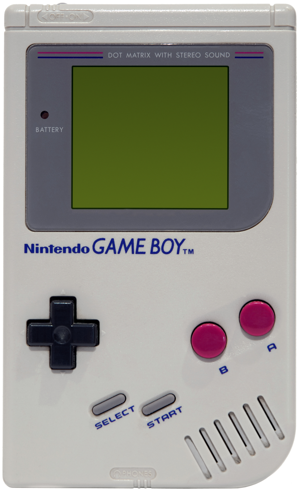
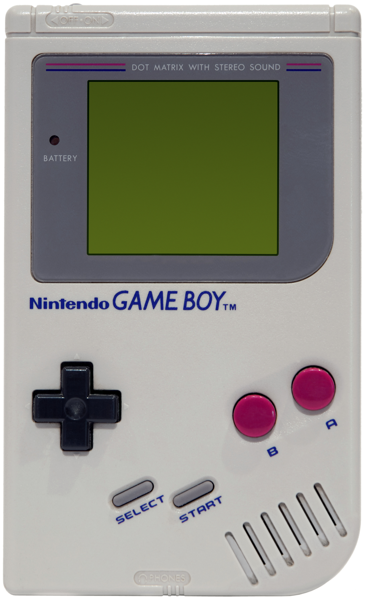

1980s is the year where Nintendo began to create and release video game consoles. 2 video game consoles in this decade were released: NES and Game Boy.
Nintendo Entertainment System (NES)
Launch Year: 1983
Notable Games: Super Mario Bros, The Legend of Zelda, Duck Hunt
Summary: It is the first Nintendo video game console sold worldwide. When it was released in the West, there was speculation that it would fail as the market were still trying to recover from the recession of the video games crash. However, it was proven wrong as it sold around 62 million units and became an iconic/classic console. It also outsold rival consoles and introduced players to Mario, Zelda, Samus, etc.
Game Boy
Launch Year: 1989
Notable Games: Tetris, Super Mario Land, Pokemon Gold/Silver
Summary: When it was released, it was cheaper than the launch price of NES with a copy of Tetris game. A newer version called Game Boy Color was introduced in 1998. The low cost helped boost its sales as it became the second best-selling game console for Nintendo since it sold around 119 million units. It was sturdy, have long-lasting batteries, playful and a well-loved toy, it also introduces new players to the world of Pokemon.
 
